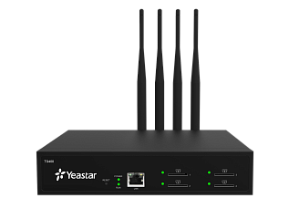

Yeastar TG400L
2 768 BYN
Цена носит информационный характер — актуальную стоимость и наличие уточняйте у менеджера.
Yeastar TG400L — VoIP-LTE-шлюз с поддержкой 4 LTE-линий.
Yeastar TG400L поможет экономить средства, используя функцию выбора оптимального маршрута звонка и функцию Call Back, поможет создать резервный канал на случай отказа проводной телефонии или телефонизировать офис в труднодоступных местах.
Гарантия 2 (два) года!
Характеристики
Возможности:
- 4 LTE-линии 800/850/900/1800/2100/ МГц LTE FDD с модулем EC21-E
- или 4 LTE-линии 800/850/900/1800/2100/МГц LTE FDD и 2300/2500/2600 МГц с модулем EC25-E
- Частота GSM: 850/900/1800/1900 МГц
- Частота WCDMA: 850/1900, 850/2100, 900/2100МГц
- Маршрутизация входящих звонков
- Маршрутизация исходящих звонков
- Групповое объединение SIP-транков и GSM-линий
- USSD-запросы
- Отправка и получение SMS (через web-интерфейс)
- Массовая рассылка SMS
- Open API для USSD-запросов и SMS (Real Open API Protocol (Based on Asterisk))
-
Анти АОН (CLIR - Calling Line Identification Restriction)
- Функция Call Back
- Горячая замена SIM-карт
- Список блокировок
- Горячая линия
- Функция AutoCLIP
- Ограничение длительности вызовов
- Переадресация вызовов
- Детализация вызовов (CDR)
- Отображение статуса вызова
- NTP
- Блокировка по IP адресу
- Оповещение о сетевой атаке
- Захват сетевых пакетов
- Системный журнал
- VoLTE( при поддержке на стороне оператора)
- Регулировка усиления
- Изменение PIN
- Выбор оператора: Автоматически/Вручную
- Оповещение о времени разговора
VoIP характеристики:
- Встроенный SIP-прокси для IP-телефонов
- Эхо компенсатор ITU-T G.168 LEC
- Протокол: SIP (RFC3261), IAX2
- Транспорт: UDP, TCP, TLS, SRTP*
- DTMF: RFC 2833, SIP INFO, In-band
- Кодеки: G.711A/U-law, G.722, G.726, G.729a, GSM, ADPCM, Speex
- Возможность подмены SIP-ответов (SIP Response Code Switch)
- Генерация тонов во время вызова
- Двухуровневый набор
Сетевые характеристики:
- VLAN, межсетевой экран
- Протоколы доступа: FTP, TFTP, HTTP, HTTPS, SSH
- Трансляция адресов: Static NAT, STUN
- Статические маршруты
- QoS/ToS
- DDNS
- Резервное копирование/Восстановление
- Обновление через HTTP/TFTP
- Управление через Web-интерфейс
Физические характеристики:
- 1 порт LAN (10/100 Мб/с)
- 4 LTE-линии 800/850/900/1800/2100/2600 МГц
- Возможность установки внешней антенны
- Размер: 213x160x44 мм
- Питание: AC 100-240В 50/60Гц 1.5A макс.
- Рабочая температура: от 0°C до 40°C
- Температура хранения: от -20°C до 65°C
- Влажность: от 10% до 90% без конденсации
*Внимание! В продуктах, предназначенных для участников Таможенного союза, данный функционал отсутствует.